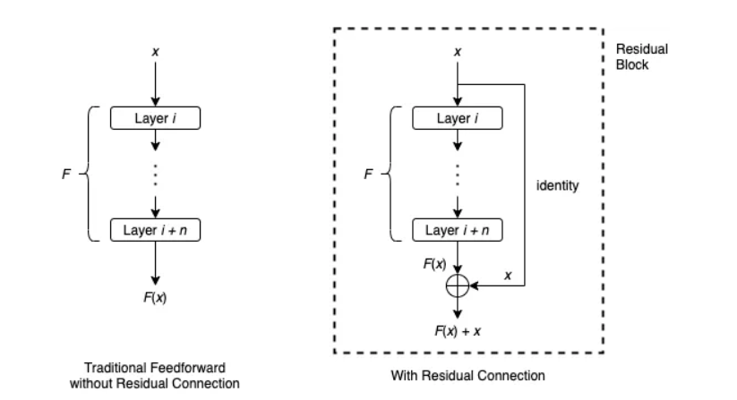
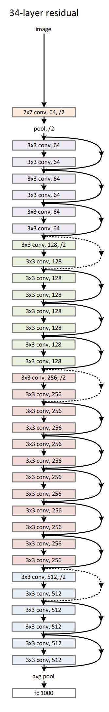
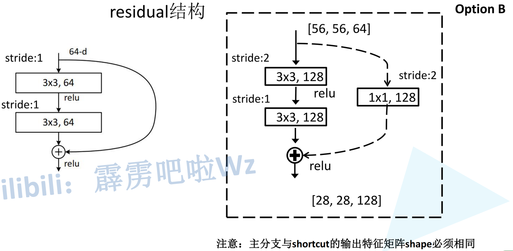

2025-08-28
Residual connection 残差连接学习
\n
训练神经网络的一个困境是，我们通常希望更深的神经网络具有更好的准确性和性能。然而，网络越深，训练就越难收敛。这一点困扰着层数深的模型，不过Kaiming He提出的Resnet创新性的使用的残差skip的方法，有效解决了这样的极深网络的问题。
\n\n\n\n
网络过深时会出现以下问题：
\n\n\n\n
\n
- 梯度消失或梯度爆炸： 以梯度消失为例，反向传播过程中，每向前传播一层，都要乘以一个小于1的误差梯度。解决梯度消失或梯度爆炸的方法有：对数据标准化处理；权重初始化；Batch Normalization（BN） \n\n\n\n
- 退化问题 （degradation problem）：ResNet主要解决退化问题，提出残差结构 \n \n\n\n\n
在传统的前馈神经网络中，数据顺序地流过每一层：一层的输出是下一层的输入。它有隐患，一旦其中某一个导数很小，多次连乘后梯度可能越来越小，这就是常说的梯度消散 ，对于深层网络，传到浅层几乎就没了。但是如果使用了残差，每一个导数就加上了一个恒等项1，dh/dx=d(f+x)/dx=1+df/dx 。此时就算原来的导数df/dx很小，这时候误差仍然能够有效的反向传播，这就是核心思想。
\n\n\n\n
Residual Connection通过跳过某些层为数据到达神经网络的后面部分提供了另一条路径。考虑一系列层，从层 i 到层 i + n ，设 F 为这些层所表示的函数。用 x 表示层 i 的输入。在传统的前馈设置中， x 将简单地一个接一个地通过这些层，并且层 i + n 的结果是 F （ x ）。绕过这些层的剩余连接通常按以下方式工作：
\n\n\n\n

\n\n\n\n剩余连接首先对 x 应用恒等映射，然后执行逐元素加法 F （ x ）+x 。在文献中，接受输入 x 并产生输出 F （ x ）+x 的整个架构通常被称为残差块或构建块。通常，残差块还将包括激活函数，例如应用于 F （ x ）+x 的 ReLU。
\n\n\n\n
强调上图中看似多余的标识映射的主要原因是，如果需要，它可以作为更复杂函数的占位符。例如，元素加法 F （ x ）+x 只有在 F （ x ）和 x 具有相同维数时才有意义。如果它们的维数不同，我们可以用线性变换（即乘以矩阵 W ）代替单位映射，并执行 F （ x ）+Wx 。
\n\n\n\n
在ResNet原文中，分为5个版本的ResNet，这5个版本详细又能分为浅层和深层两种
\n\n\n\n
对于浅层网络（18/34）：
\n\n\n\n
\n
- conv2_x第一层 为实线 残差结构，因为通过最大池化下采样后得到的输出是[56,56,64]，刚好是实线残差结构所需要的输入shape \n\n\n\n
- conv3_x第一层 为虚线 残差结构，输入特征矩阵shape是[56,56,64]，输出特征矩阵shape是[28,28,128]
\n
\n\n\n\n

\n\n\n\n
对于深层网络（50/101/152）：
\n\n\n\n
\n
- conv2_x第一层 为虚线 残差结构，因为通过最大池化下采样后得到的输出是[56,56,64]，而实线残差结构所需要的输入shape是[56,56,256] \n\n\n\n
- conv3_x第一层 为虚线 残差结构，输入特征矩阵shape是[56,56,256]，输出特征矩阵shape是[28,28,512] \n \n\n\n\n
无论是浅层网络还是深层网络，conv3_x、conv4_x、conv5_x的第一层都为虚线残差结构 ，因为需要将上一层输出特征矩阵的高、宽、深度调整为当前层所需输入特征矩阵的高、宽、深度（Down-sampling is performed by conv3_1、conv4_1 and conv5_1 with a stride of 2）
\n\n\n\n

\n\n\n\npytorch对于Resnet的主类实现如下：
\n\n\n\n
class ResNet(nn.Module):\n def __init__(\n self,\n block: type[Union[BasicBlock, Bottleneck]],\n layers: list[int],\n num_classes: int = 1000,\n zero_init_residual: bool = False,\n groups: int = 1,\n width_per_group: int = 64,\n replace_stride_with_dilation: Optional[list[bool]] = None,\n norm_layer: Optional[Callable[..., nn.Module]] = None,\n ) -> None:\n super().__init__()\n _log_api_usage_once(self)\n if norm_layer is None:\n norm_layer = nn.BatchNorm2d\n self._norm_layer = norm_layer\n\n self.inplanes = 64\n self.dilation = 1\n if replace_stride_with_dilation is None:\n # each element in the tuple indicates if we should replace\n # the 2x2 stride with a dilated convolution instead\n replace_stride_with_dilation = [False, False, False]\n if len(replace_stride_with_dilation) != 3:\n raise ValueError(\n "replace_stride_with_dilation should be None "\n f"or a 3-element tuple, got {replace_stride_with_dilation}"\n )\n self.groups = groups\n self.base_width = width_per_group\n self.conv1 = nn.Conv2d(3, self.inplanes, kernel_size=7, stride=2, padding=3, bias=False)\n self.bn1 = norm_layer(self.inplanes)\n self.relu = nn.ReLU(inplace=True)\n self.maxpool = nn.MaxPool2d(kernel_size=3, stride=2, padding=1)\n self.layer1 = self._make_layer(block, 64, layers[0])\n self.layer2 = self._make_layer(block, 128, layers[1], stride=2, dilate=replace_stride_with_dilation[0])\n self.layer3 = self._make_layer(block, 256, layers[2], stride=2, dilate=replace_stride_with_dilation[1])\n self.layer4 = self._make_layer(block, 512, layers[3], stride=2, dilate=replace_stride_with_dilation[2])\n self.avgpool = nn.AdaptiveAvgPool2d((1, 1))\n self.fc = nn.Linear(512 * block.expansion, num_classes)\n\n for m in self.modules():\n if isinstance(m, nn.Conv2d):\n nn.init.kaiming_normal_(m.weight, mode="fan_out", nonlinearity="relu")\n elif isinstance(m, (nn.BatchNorm2d, nn.GroupNorm)):\n nn.init.constant_(m.weight, 1)\n nn.init.constant_(m.bias, 0)\n\n # Zero-initialize the last BN in each residual branch,\n # so that the residual branch starts with zeros, and each residual block behaves like an identity.\n # This improves the model by 0.2~0.3% according to https://arxiv.org/abs/1706.02677\n if zero_init_residual:\n for m in self.modules():\n if isinstance(m, Bottleneck) and m.bn3.weight is not None:\n nn.init.constant_(m.bn3.weight, 0) # type: ignore[arg-type]\n elif isinstance(m, BasicBlock) and m.bn2.weight is not None:\n nn.init.constant_(m.bn2.weight, 0) # type: ignore[arg-type]\n\n def _make_layer(\n self,\n block: type[Union[BasicBlock, Bottleneck]],\n planes: int,\n blocks: int,\n stride: int = 1,\n dilate: bool = False,\n ) -> nn.Sequential:\n norm_layer = self._norm_layer\n downsample = None\n previous_dilation = self.dilation\n if dilate:\n self.dilation *= stride\n stride = 1\n if stride != 1 or self.inplanes != planes * block.expansion:\n downsample = nn.Sequential(\n conv1x1(self.inplanes, planes * block.expansion, stride),\n norm_layer(planes * block.expansion),\n )\n\n layers = []\n layers.append(\n block(\n self.inplanes, planes, stride, downsample, self.groups, self.base_width, previous_dilation, norm_layer\n )\n )\n self.inplanes = planes * block.expansion\n for _ in range(1, blocks):\n layers.append(\n block(\n self.inplanes,\n planes,\n groups=self.groups,\n base_width=self.base_width,\n dilation=self.dilation,\n norm_layer=norm_layer,\n )\n )\n\n return nn.Sequential(*layers)\n\n def _forward_impl(self, x: Tensor) -> Tensor:\n # See note [TorchScript super()]\n x = self.conv1(x)\n x = self.bn1(x)\n x = self.relu(x)\n x = self.maxpool(x)\n\n x = self.layer1(x)\n x = self.layer2(x)\n x = self.layer3(x)\n x = self.layer4(x)\n\n x = self.avgpool(x)\n x = torch.flatten(x, 1)\n x = self.fc(x)\n\n return x\n\n def forward(self, x: Tensor) -> Tensor:\n return self._forward_impl(x)\n \n \n \ndef _resnet(\n block: type[Union[BasicBlock, Bottleneck]],\n layers: list[int],\n weights: Optional[WeightsEnum],\n progress: bool,\n **kwargs: Any,\n) -> ResNet:\n if weights is not None:\n _ovewrite_named_param(kwargs, "num_classes", len(weights.meta["categories"]))\n\n model = ResNet(block, layers, **kwargs)\n\n if weights is not None:\n model.load_state_dict(weights.get_state_dict(progress=progress, check_hash=True))\n\n return model
\n